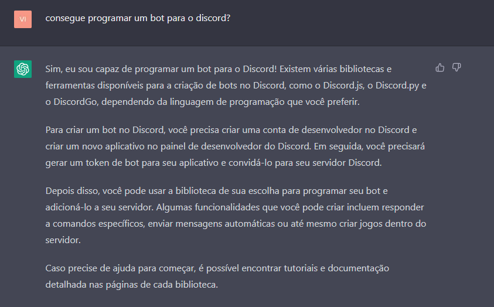
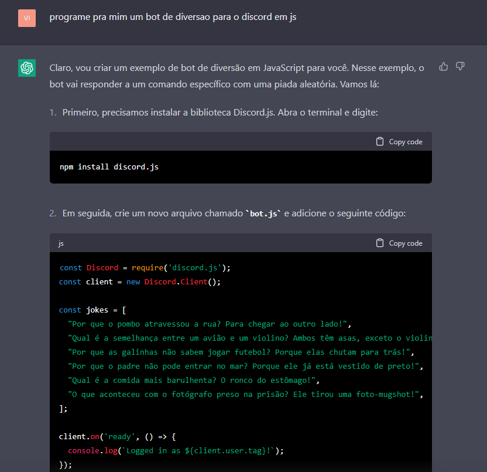
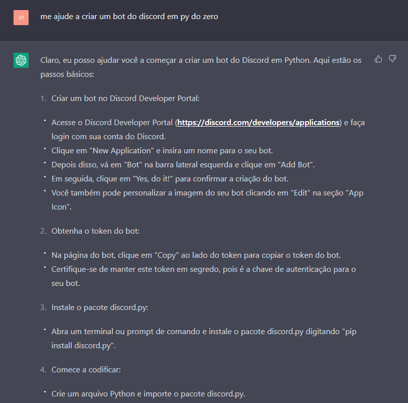
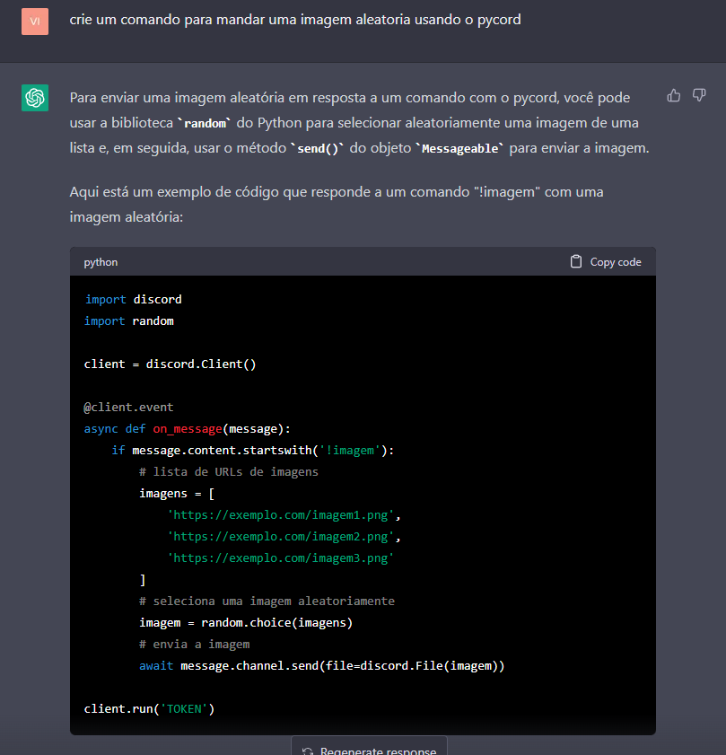
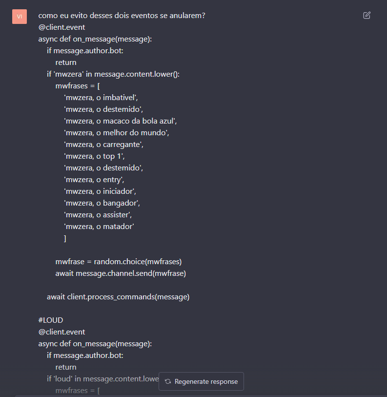
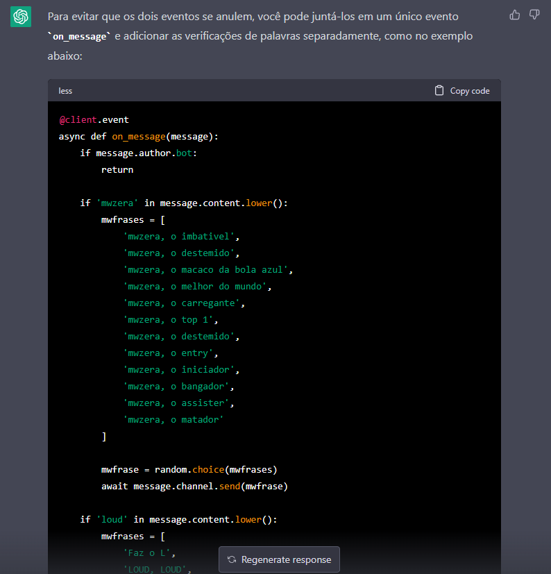

Para o inicio do projeto, deve ser iniciada uma conversa com o chatGPT sempre buscando manter o assunto para que a
inteligencia artifical se mantenha eficiente, podendo assim, manter uma praticidade e gerando uma constancia no código
gerado pela inteligencia artificial:

Em seguida escolhi a linguagem de programação e pedi para iniciar os procedimentos para criar o bot. Pedi além da base
para o bot, mas também comandos para tal programa interagir quando fosse chamado:

Após aplicar a programação oferecida, houve uma sequencia interminável de erros, me forçando a tentar uma nova
alternativa de linguagem de programação. Tentei iniciar novamente mas utilizando a linguagem Python:

Mesmo assim, houve diversos problemas ao utilizar o código oferecido, o ChatGPT não conseguiu explicar todo o
necessário, então, decidi fazer pelo menos a base sozinho para poder testar pelo menos a parte dos comandos se o chat se
sobressairia nesse quesito.
O estilo de comando que o ChatGPT cria, utiliza de um único arquivo "index.py", com a base finalizada, pude enfim
testar se o chat seria capaz de criar comandos:

O formato do código oferecido é funcional, porém, nada prático, além da necessidade de fazer alterações pois ele repete
as extensões já exportadas como por exemplo o "import discord", além disso, ele retrata um comando como event sendo
que a calling de event só pode ser chamada uma vez e não pode ser repetido. Mesmo assim decidi apenas colocar o
código junto com o anterior para ver como ele iria retratar um erro:

